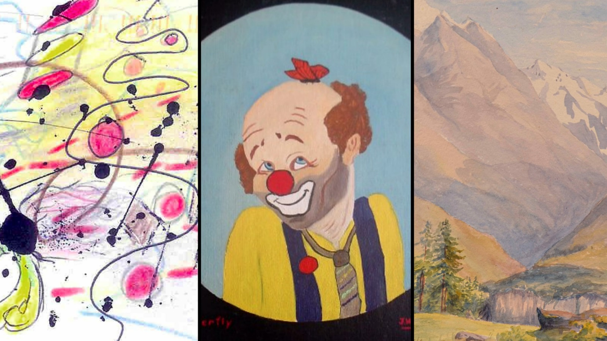

O tema em questão é bastante denso e defini-lo varia um pouco de acordo com o referencial. Iniciaremos
conceituando do ponto de vista filosófico e para tal é preciso antes uma breve introdução conceitual.
Spinoza afirma que a potência de agir, é a essência fundamental de todas as coisas no universo, Hobbes
chamou o mesmo termo de conatus e Freud por sua vez de libido, mas essencialmente é o mesmo conceito. Tudo o
que é vivo busca perpetuar sua existência passando para um estado mais energético quando há energia em
abundância chamamos alegria e quando esta falta temos a tristeza.
Quando os átomos se movem eles se chocam e dessa interação surge a energia, quem explica isso é
Demócrito. Daí segue que se o movimento cessa não há mais energia, nem potência de agir culminando na morte.
Portanto, os corpos são regidos por afetos que nada mais são do que passagens de energia entre eles podendo
aumentar ou diminuir suas potências.
Baseado nos estudos anteriores, David Hume, filósofo escocês, aprofunda a discussão apontando dois conceitos
que fazem parte desses encontros: a esperança e o medo. O medo é um afeto triste, mas nem toda tristeza é
medrosa. O medo é uma tristeza determinada por um conteúdo de consciência e não por um mundo encontrado pelo
corpo. Em outras palavras, você tem medo daquilo que imagina e não daquilo que você vê. O mundo te
entristece, a imaginação te amedronta.
A esperança está para a alegria assim como o medo
está para a tristeza, ambos tratam de situações complexas causadas pela imaginação humana. A princípio o
conceito parece estranho podendo lhe levar a seguinte conclusão: "Mas se eu encontro um
tigre sinto medo do que estou vendo e não de uma ideia!". No entanto, essa lógica é equivocada: você tem
medo do que imagina que o tigre pode fazer.
Como dito anteriormente o processo do medo é formado por simbologia ou associação imaginativa e dessa forma o contexto depende é fundamental para o medo. Observe com atenção os quadros abaixo.
Muito provavelmente as imagens não provocam nenhum tipo de emoção forte e certamente não produzem qualquer
efeito assustador, no entanto exploraremos agora o fenômeno da lei de propagação. É possível com estímulo e
repetição suficiente aprender a sentir medo de qualquer ideia ou representação, como no experimento dos cães
de Pavlov, mas com sentimentos negativos. Uma das principais razões para isso é a empatia, aprender o que
fazia mal a outros seres humanos no período primitivo aumentava a chance de sobrevivência pela transmissão
social de emoções e medos.
Portanto, coloquemos o exposto acima em prática adicionando o contexto desses quadros. A primeira imagem
foi pintada por Charles Manson, líder de uma seita neonazista responsável por 9 homicídios que pretendiam
iniciar uma guerra racial. A do meio foi feita por John Wayne Gacy, um serial killer que abusou e matou pelo
menos 33 garotos de forma brutal. A última é de autoria de Hitler.
Sua percepção provavelmente mudou a respeito dos quadros e pelo menos um leve desgosto surgirá quando você olhar de novo para eles porque o que sentimos é construído cognitivamente em nossos cérebros com base em certos elementos não conscientes que são combinados e a partir do momento em que foi atribuído um significado às imagens elas param de ser meramente abstratas para algo previamente experienciado que tem como resposta uma emoção negativa.
Já vimos que os medos podem ser adquiridos através de experiências pessoais, interações sociais e exposição
a estímulos ameaçadores. Por exemplo, um indivíduo pode desenvolver o medo de aranhas após uma experiência
aversiva ou após observar outras pessoas demonstrando medo em relação a esses animais. Esse processo faz
parte dos mecanismos de defesa no cérebro e a amígdala possui um papel fundamental determinando o que é
perigoso no mundo. Ele nos dita o que precisamos lembrar e o que deve ser aprendido para a sobrevivência.
O funcionamento da amígdala está na base de pesquisas sobre o medo que procuram entender o comportamento
humano variando de pessoas avessas ao perigo até aqueles que se lançam sem receios em atividades perigosas.
Os primeiros seres humanos que evitavam perigos sobreviveram por tempo o bastante para se reproduzir e se
tornaram nossos ancestrais, eles povoaram o mundo com criaturas como nós, organismos que instintivamente se
afastam de sensações potencialmente perigosas como dor e doenças, ambientes sufocantes. Eles não são
agradáveis e não é preciso aprender a não gostar deles até mesmo um recém nascido se incomoda com isso por
isso damos a eles o nome de “aversões inatas”.
A amígdala tem um papel fundamental na interpretação dessas aversões. Sempre que uma experiência negativa
surge o sistema límbico avalia se trata aquela é uma situação perigosa e repassa a informação para a
amígdala que por sua vez vai formar uma poderosa conexão entre esse novo elemento com uma das aversões
inatas que tem o papel de prevenir a morte. Os neuropsicólogos concordam na existência de pelo menos oito
delas: dor, isolamento, movimentos bruscos, o desconhecido ou anormal, doenças, incapacitação, queda e
sufocamento.
Os seres humanos são animais sociais, precisamos uns dos outros para sobreviver, então, se estivermos sozinhos, nossas chances de sobrevivência diminuem. Quando as pessoas se isolam socialmente, isso leva a problemas como aumento de doenças cardíacas, maior risco de câncer, problemas físicos e mortalidade. Está muito ligado ao senso de sobrevivência e evitar a morte.
Um novo medo surgiu nas últimas décadas. No passado ninguém possuía celular, ninguém se conectava constantemente a internet, mas agora a maioria de nós está. Esse é o novo normal e o atípico é não estar conectado. Ficar sem celular, a esse medo os psicólogos nomearam de nomofobia, é algo que realmente está sendo estudado e se conecta a aversão inata do isolamento.
O isolamento nos ajuda a desvendar muitos medos
terciários que não parecem estar diretamente relacionados à morte, mas se ligam por meio da reclusão. Por
exemplo, o medo de falar em público. Isso se relaciona ao nosso medo de rejeição e, quando sentimos que as
pessoas não gostam de nós, nos sentimos sozinhos. Assim, expor-se, ter esse possível medo de rejeição ao
falar em público e não saber como as pessoas vão perceber você, é muito assustador para muitas pessoas. Isso
não significa necessariamente que você vai morrer, no entanto, está conectado à nossa aversão inata ao
isolamento. Através da evolução, aprendemos que o isolamento é algo ruim que pode levar à morte. Portanto,
temos medo disso e o evitamos.
Após toda a discussão podemos concluir que medo é a antecipação de uma aversão inata. No entanto e quanto as pessoas que não possuem uma amígdala, elas não teriam a ponte que faz associação com essas aversões, então seriam elas imunes ao medo? Para grande parte deles, eles podem tranquilamente brincar com aranhhas ou enfrentar assaltantes, mas um experimento com três pacientes que seguiam esse critério demonstrou que sufocamento produz uma mudança sanguínea do qual eles não estão acostumados, sendo inclusive mais assustador neles do que em pessoas com as amígdalas intactas. Portanto, o medo mais universal possível é elevação de dióxido de carbono no sangue causado por fatores externos incontroláveis.